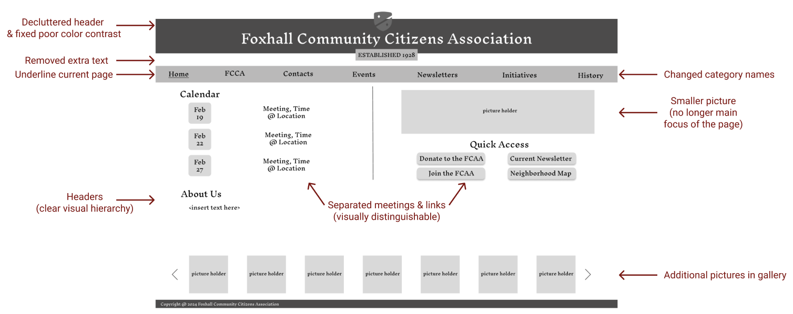

Responsive Redesign
sketches | wireframes | css & html responsive website development
Overview
Context: Imagine you are a Washington DC resident who wants to be more involved with your neighborhood's community association. Interested in donating to the association and attending the next meeting, you navigate to the Foxhall Community Citizens Association website and see the following:
Problem: This website is difficult to navigate. The lack of visual hierarchy and inconsistent typography makes it hard to find information. The small font makes the text difficult to read. Overall, the website feels crowded, unorganized, and overwhelming.
Objective: How can this website be redesigned and redeveloped to feature a clear visual hiearchy, high contrast color scheme, fun pictures, and support accessibility, while maintaining a historical theme?
Inspirational Design Principles (that will guide my design choices)
- Learnability: how easy is the website for people to learn?
- Memorability: how easy is it for people to remember how to use the website?
- Usability: how easy is this website to use?
- Accessiblity: how well does this website accomodate for people with various disabilities?
Sketching

Having identified key issues with the original website, I used "Crazy 8's Sketching" to brainstorm design ideas
I ultimately compiled my favorite design ideas into a final sketch

Low-Fidelity Wireframes
Inspired by my sketches, I utilized Figma to create a low-fidelity wireframe for various screen sizes: Computer, iPad, iPhone


Visual Style Guide
How can I replicate the historical theme of the original page while increasing the color contrast and overall, provide more visual clarity? I chose a beige & maroon red theme to fit the brick architecture of the neighborhood buildings.

High-Fidelity Wireframes
Drawing upon my low-fidelity wireframes and visual style guide, here's the final product I designed for the following screen sizes: Computer, iPad, iPhone


Develop a Responsive Website (HTML/CSS)
My final task is to code my redesigned website using html and css. My website can be viewed on any device, and I have provided the link here. I had to make a few modifications to my original design but overall I really enjoyed this process!
Reflections & Lessons Learned
I learned a lot from the process of redesigning and building this webpage. I found myself practicing iterative design throughout my design process, as I would feel unsatisfied with a certain decision and go back and refine the design. I learned how to ask for specific feedback from my peers and keep an open mind when hearing their constructive criticism. I developed my understanding of how design can influence user decision-making.
I'm excited to share my proposed website redesign to the FCCA (Foxhall Community Citizens Association) and hear their feedback as well!